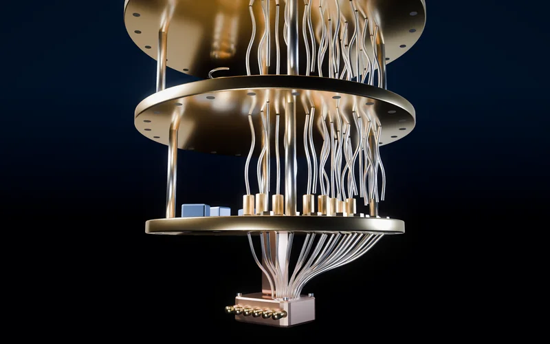
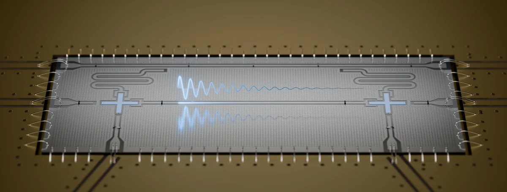

Circuit/cavity QED and photonic interfaces
Selected publications on superconducting microwave cavities, Fano-qubits, cryogenic interfaces, high-Q resonators, and microwave/photonic quantum hardware.


Relevant Publications
Papers most closely tied to this area. See more work on the Publications page, or the complete record on Google Scholar.
- D. Trivedi, A. Bhowmik, L. Niaz, and A. Krasnok, “Reflection-Zero Waveforms for Selective Loading in Shared-Line Superconducting Qubit Circuits,”Advanced Quantum Technologies 9(9), e70441 (2026). Selected for a cover feature.doi:10.1002/qute.70441
- A. Krasnok, “Metamaterials in Superconducting and Cryogenic Quantum Technologies,”Applied Physics Reviews 13, 021311 (2026).doi:10.1063/5.0282013
- A. Krasnok, P. Dhakal, A. Fedorov, P. Frigola, M. Kelly, and S. Kutsaev, “Superconducting Microwave Cavities and Qubits for Quantum Information Systems,”Applied Physics Reviews 11(1), 011302 (2024).doi:10.1063/5.0155213
- I. Torres and A. Krasnok, “A cryogenic dielectric antenna for wireless sensing and interfacing outside the 10 K environment,”Cryogenics 155, 104286 (2026).doi:10.1016/j.cryogenics.2026.104286
- S. V. Kutsaev et al. (incl. A. Krasnok), “Enhancing the Q-Factor of a Practical Qubit Niobium Three-Dimensional λ/4-Resonator Through Surface Treatment,”IEEE Transactions on Applied Superconductivity 34(2), 1700909 (2024).doi:10.1109/TASC.2024.3354948
- D. Trivedi, L. Belostotski, A. Madanayake, and A. Krasnok, “Fano-Qubits for Quantum Devices with Enhanced Isolation and Bandwidth,”Applied Physics Letters 122, 264003 (2023).doi:10.1063/5.0151047
- I. Torres and A. Krasnok, “Cryogenic Dielectric Mie Resonators for Quantum Applications,”Proc. SPIE 13379, 133790H (2025).doi:10.1117/12.3052180
- A. Pronikov, A. Krasnok, S. Romanenko, A. Smirnov, and V. Yakovlev, “Ferrite-Free Circulator for Precise Measurements of SRF Cavities with High Q-Factor,”NAPAC 2022, WEPA49.doi:10.18429/JACoW-NAPAC2022-WEPA49